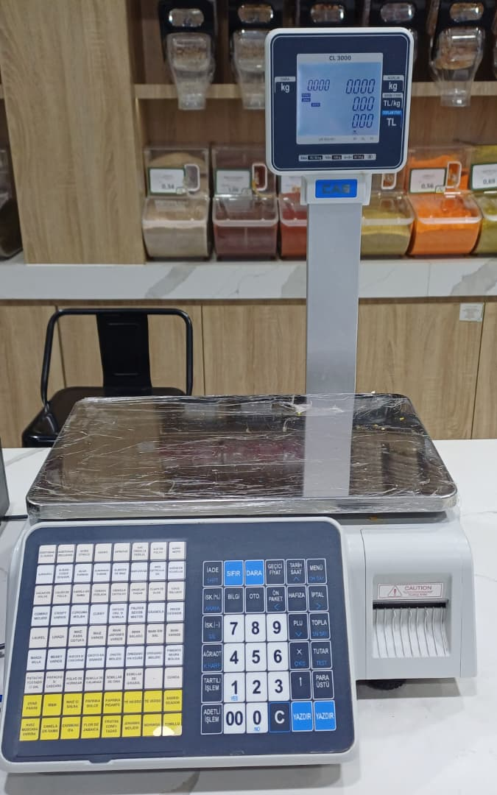
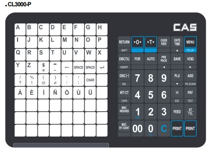

Vista general de la balanza y su keyboard
Aquí se muestran imagenes referenciales del modelo de la balanza y del teclado de la misma para poder saber ubicarse y llevar a cabo los pasos que siguen mas adelante.
A destacar, para poder eliminar un valor erróneo que se haya colocado podemos hacerlo con la tecla con la flecha hacia la izquierda ⬅ que se encuentra en el lado izquierdo del teclado.
Para regresar un paso solo basta darle la X que se encuentra en el lado derecho del teclado.
Balanza

Keyboard
